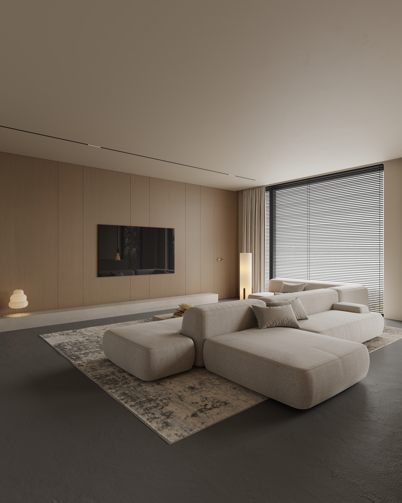
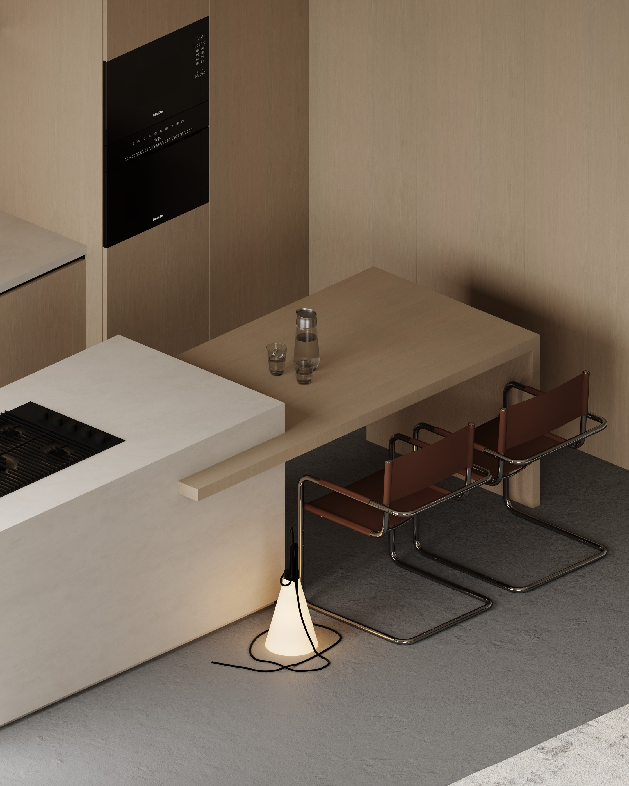
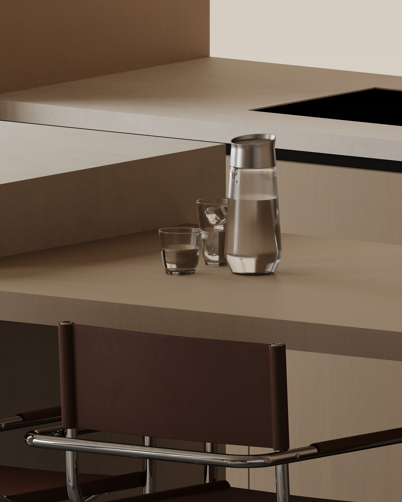
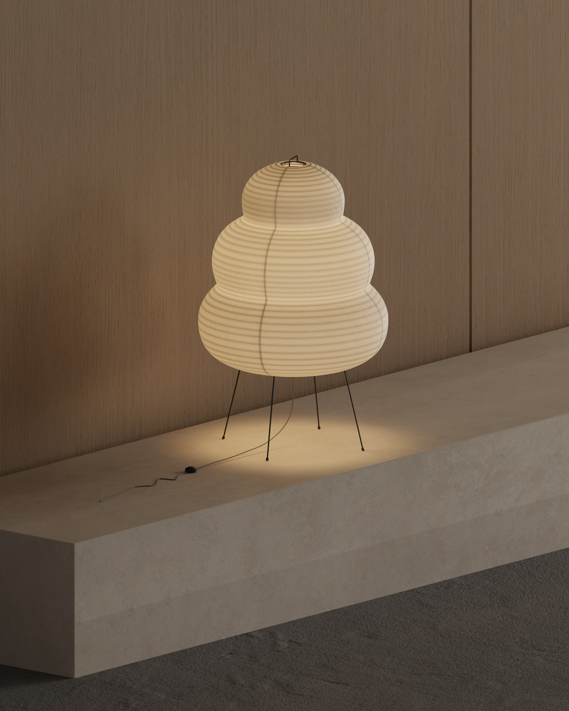

A calm composition of warm timber, soft neutral tones and deep charcoal flooring. Clean-lined cabinetry, generous glazing and carefully placed lighting give the living and kitchen spaces a quiet, contemporary character, while subtle material contrasts add depth without overwhelming the simplicity of the design.







Have a project in mind? Let’s talk about your requirements, references and visual direction.
START A PROJECT